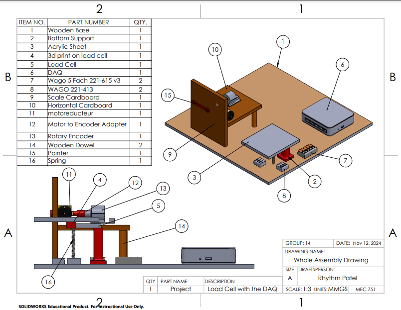
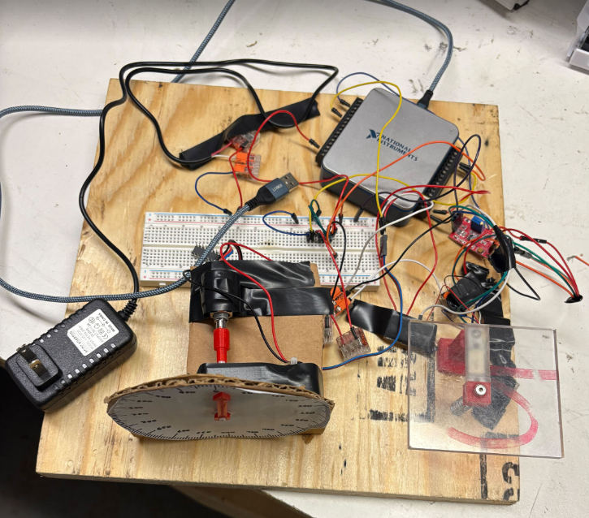
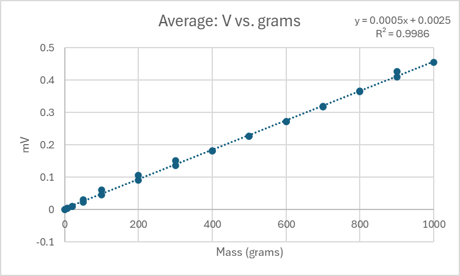
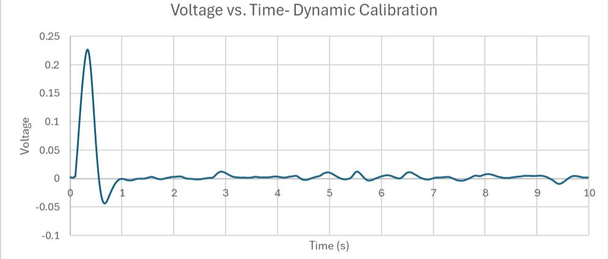
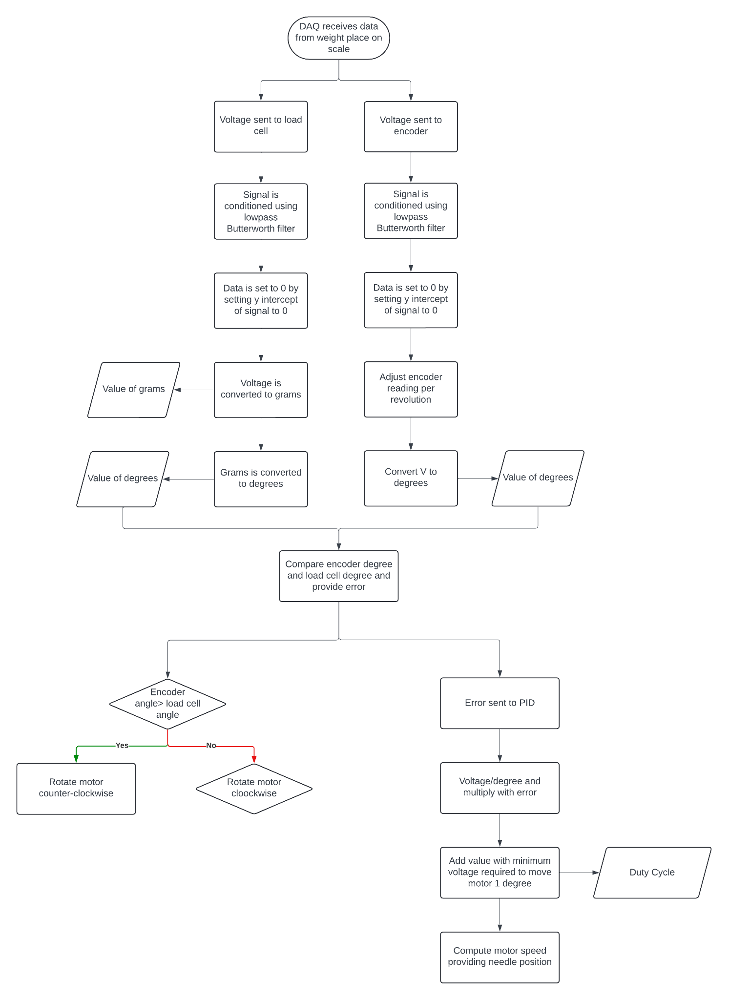
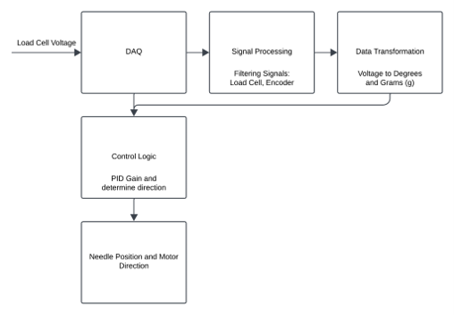
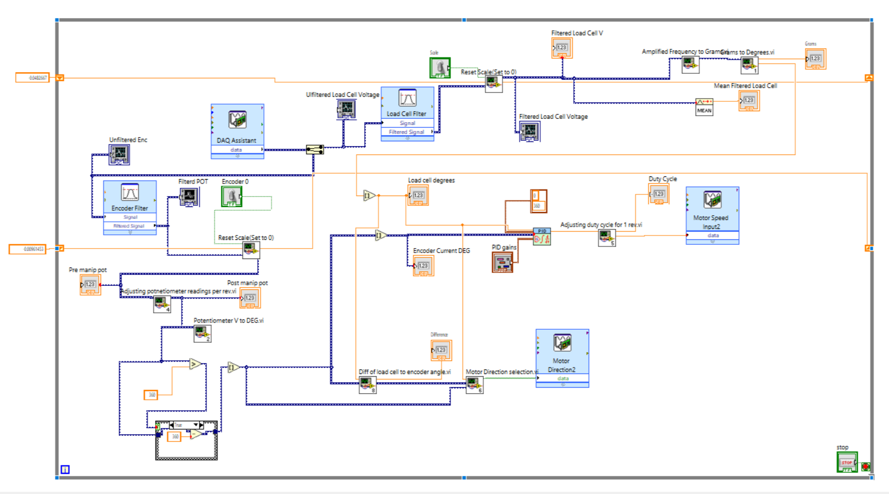

Electromechanical Weighing Station & PID Control
This project involved the design and implementation of an electromechanical weighing system capable of measuring loads from 0 to 1 kg while driving a physical rotary indicator. The system combined mechanical design, load-cell sensing, NI USB-6001 data acquisition, LabVIEW signal processing, rotary position feedback, and closed-loop motor control.

Converting a limited sensor into a complete 1 kg weighing system.
The project required more than simply reading a load cell. The final system needed to measure weight, convert the sensor signal into a meaningful physical value, and reproduce that measurement through a motor-driven analog dial.
0–1 kg measurement range
The weighing station had to support and measure objects across a full one-kilogram range.
10 g resolution
The system needed sufficient sensing and calibration precision to distinguish relatively small changes in applied mass.
Mechanical analog display
The measured weight had to be represented physically through a motor-driven rotary pointer rather than only displayed digitally.
Closed-loop feedback
Position feedback was required so the controller could continuously correct the indicator position and improve repeatability.
NI USB-6001 integration
Data acquisition and motor-control signals were implemented through the required National Instruments DAQ hardware.
Restricted 3D-print mass
The design was limited to a maximum of 25 g of 3D-printed material, requiring selective use of printed components.
Extending the load-cell range mechanically.
One of the main design challenges was that the available load cell could not directly support the full required 1 kg measurement range. A spring was incorporated into the weighing structure so that part of the applied force was carried mechanically instead of being transferred entirely through the sensor.
Weighing Platform
An acrylic weighing surface transferred the applied mass into the load-cell structure while providing a practical area for placing test weights.
Spring-Assisted Range Extension
A spring connected between the structure and the free side of the weighing system absorbed part of the applied force, allowing the limited-capacity sensor to participate in measurements approaching the required 1 kg range.
Motor-Driven Indicator
A DC motor rotated the analog pointer, turning the electronically measured weight into a physical dial position.
Position Feedback
Rotary position sensing allowed the controller to determine the current pointer angle and compare it against the angle corresponding to the measured load.

Design constraint: the load cell itself was rated below the required full-scale measurement range. Mechanical load sharing and subsequent calibration were therefore essential parts of the system design.
Sensor acquisition, feedback, and motor actuation.
The NI USB-6001 DAQ served as the bridge between the physical system and the LabVIEW control program. Sensor voltages were acquired from the load-cell and rotary-feedback systems, processed in software, and converted into control signals for the DC motor.

Load Cell
Mechanical deformation produced an electrical output that could be acquired and calibrated into a corresponding mass measurement.
NI USB-6001 DAQ
The DAQ acquired sensor data and provided the interface between the physical hardware and the LabVIEW control environment.
Rotary Feedback
Voltage from the rotary position sensor was converted into angular displacement so the current pointer position could be monitored.
DC Motor Control
Motor direction and effective drive level were controlled based on the difference between desired and measured pointer positions.
Converting sensor voltage into usable weight measurements.
Multiple loading and unloading cycles were conducted using known masses. The measured voltage was compared against the applied mass to determine the sensor relationship and evaluate linearity, hysteresis, and repeatability.

Static calibration was also used to evaluate hysteresis, nonlinearity, and repeatability. These measurements helped identify limitations caused by the mechanical structure, sensor behavior, and measurement resolution.
Characterizing transient response.
Dynamic testing was performed by applying a step input using a 450 g weight and observing the resulting voltage response. The transient response was used to estimate ringing frequency, rise time, settling time, percent overshoot, damping ratio, and natural frequency.

From raw voltage to closed-loop pointer control.
The LabVIEW program combined sensor acquisition, filtering, calibration, unit conversion, feedback comparison, PID control, motor-direction logic, and duty-cycle generation.


Signal Conditioning
Low-pass Butterworth filtering was applied to the load-cell and encoder signals to reduce measurement noise before control calculations were performed.
Zero / Reset Function
The program included a scale-reset function that compensated for the current signal offset and established a new zero reference.
Weight-to-Angle Conversion
Calibrated load-cell measurements were converted from voltage to grams and then mapped into a corresponding 0–360° dial position.
Encoder Angle
Rotary sensor voltage was adjusted for individual revolutions and converted into the current pointer angle.
PID Error Correction
Desired dial position from the load cell was compared against the measured encoder position. The resulting error was processed by the PID controller.
Direction & Duty Cycle
The sign and magnitude of the position error were used to determine motor direction and the required motor drive level.

Integrating mechanics, sensing, software, and feedback control.
The completed system successfully combined the load-cell measurement system with a motor-driven physical indicator. Calibration established a strong linear relationship between applied mass and sensor voltage, while feedback from the rotary sensor allowed the controller to continuously correct dial position.
Measurement
- Tested across the required 0–1 kg range.
- Reported measurement deviations remained approximately within ±8 g.
- The average calibration curve produced an R² of approximately 0.9986.
Control
- Rotary feedback provided real-time indicator position.
- PID tuning reduced oscillatory motor behavior.
- Reduced motor speed improved pointer stability and precision.
Error Mitigation
- Low-pass filtering reduced electrical and sensor noise.
- Repeated calibration measurements were used to evaluate hysteresis and repeatability.
- Mechanical components were secured to reduce vibration and movement.
Engineering Takeaways
- Sensor calibration is central to converting raw electrical signals into reliable physical measurements.
- Mechanical design can compensate for limitations in available sensing hardware.
- Feedback control requires iterative tuning to balance speed, stability, and overshoot.
Final Outcome
The project demonstrated a complete mechatronic development cycle: mechanical design, sensor integration, electrical interfacing, calibration, signal processing, dynamic testing, feedback control, and physical validation. The finished system transformed an applied weight into a calibrated electrical measurement and then used closed-loop motor control to reproduce that measurement on a physical analog dial.